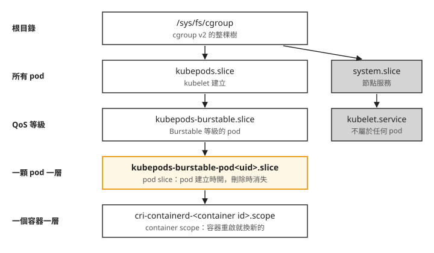
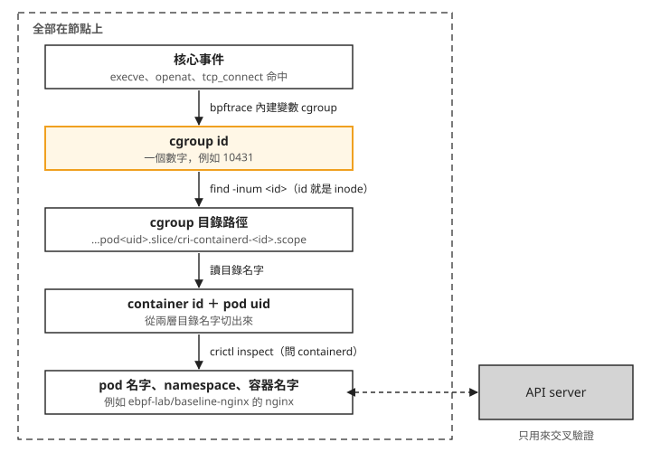
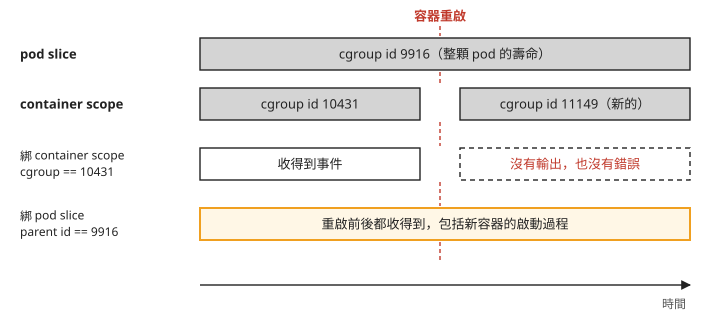

Day 2: 把核心事件接回 Kubernetes——用 cgroup id 查出 pod、只追蹤一顆 pod¶

Day 1 的 opensnoop 能看到節點上的開檔事件。假設其中一行寫著某個 cat 開了 /etc/shadow：你看得到 PID、行程名稱和路徑，卻看不出是哪一顆 pod 做的。這台節點上同時跑著好幾顆 pod，還有 kubelet 這類節點自己的服務，而三支經典工具都沒有「pod」這個欄位。
這一章把核心事件接回 Kubernetes，選用 cgroup id 對應容器。我們會從這個數字一路查到 pod 名字，全程只用節點上的檔案和工具，不呼叫 API server。查得到身分之後，再寫一支只追蹤一顆 pod 的 bpftrace 腳本，記下 nginx 啟動時執行了哪些程式、開了哪些檔案、連到哪裡，最後故意在 pod 裡做幾件不尋常的事，看這份紀錄抓不抓得到。
讀完之後，看到一筆帶 cgroup id 的核心事件，你能查出它來自哪顆 pod 的哪個容器，或是節點自己的服務；要追蹤一顆 pod 時，你能判斷過濾條件該綁在哪一層，也知道這種追蹤看不見哪些動作。
開始之前¶
這一章沿用 Day 1 的 AKS 叢集與 Ubuntu 24.04 一般 CPU 節點。ebpf 節點需使用 cgroup v2，kubelet 與 containerd 都使用 systemd cgroup driver，後面的 .slice、.scope 路徑才會符合本章寫法。先把 ebpf 節點池拉回 2 台：
$ az aks nodepool scale -g <resource-group> --cluster-name <cluster> -n ebpf \
--subscription <subscription-id> --node-count 2
再套用 Day 0 起使用的特權 DaemonSet 01-ebpf-lab-daemonset.yaml（privileged、hostPID: true、掛載節點的 /sys），它會在每台 ebpf 節點上各放一顆追蹤 pod：
接著在每顆追蹤 pod 裡安裝 bpftrace，內容跟 Day 0 的安裝腳本相同：
apt-get update -qq
DEBIAN_FRONTEND=noninteractive apt-get install -y -qq bpftrace
bpftrace --version
nsenter -t 1 -m -- bpftool version
本章使用容器裡裝好的 bpftrace v0.20.2，執行前確認版本，避免誤用節點 /usr/local/bin 裡的舊版。bpftool 不另外裝，用 nsenter -t 1 -m 借用節點上內建的那支。
本章用 cat > 檔名 <<'EOF' 建立的檔案都在工作站上建立：YAML 用 kubectl apply 套用，.sh 和 .bt 要在追蹤 pod 裡執行，得自己複製進追蹤 pod（例如用 kubectl cp）。步驟 5 的腳本預設 05-podtrace.bt 放在追蹤 pod 的 /tmp/podtrace.bt，複製時直接用這個路徑最省事。
叢集重新啟動後，若 kubectl 因 DNS 解析失敗而連不到 API server，處理方式見 Day 1 的「az aks start 之後 kubectl 回 no such host，nslookup 卻解得到」。使用 --server 加 --tls-server-name 直接連 IP 前，先重新查詢 API server 的 IP，不要沿用停機前的位址。
步驟 1：部署被觀察的 nginx¶
被觀察的對象選 nginx，原因有三個。第一，官方映像的 /docker-entrypoint.sh 在主程式啟動前會先跑一串 shell 腳本，啟動期間真的有事情可看。第二，它開的檔案不多，整理出來的清單一頁看得完；Python 應用光是 import 就可能開幾百個檔。第三，設定檔裡可以放一條 proxy_pass，讓 nginx 自己對外連線，連線那一欄才不會是空的。上游位址寫成 IP 1.1.1.1 而不是網域，nginx 就不必先查 DNS，紀錄裡那筆連線的來源很單純。
映像從 MCR（Microsoft Container Registry，微軟的公開映像倉庫）上的 Docker Hub mirror（mcr.microsoft.com/mirror/docker/library/）拉，課程用它避開 Docker Hub 的匿名拉取限制。這個 mirror 的 nginx 在本課驗證時只到 1.25，寫成較新的 tag 會拉不到，describe 看到的錯誤長這樣：
$ kubectl -n ebpf-lab describe pod baseline-nginx | tail -3
Failed to pull image "mcr.microsoft.com/mirror/docker/library/nginx:1.27":
failed to resolve image: … not found
訊息跟 tag 打錯字一模一樣。怎麼查 mirror 實際有哪些 tag，見疑難排解：MCR mirror 拉不到較新的 nginx。完整的定義如下，用的是 1.25：
cat > 02-nginx-baseline.yaml <<'EOF'
# nginx is picked over a synthetic sleep-pod because its startup is genuinely
# non-trivial: /docker-entrypoint.sh execs a chain of shell helpers before the
# master process ever reads nginx.conf. The proxy_pass location gives the pod a
# real upstream dependency, so a warm-up request produces an outbound TCP
# connection inside the startup window.
#
# QoS is deliberately Burstable (requests only, no limits) so the pod lands in
# kubepods-burstable.slice; a Guaranteed pod sits one level higher in the cgroup
# tree and the level numbers quoted below would not match.
apiVersion: v1
kind: ConfigMap
metadata:
name: nginx-baseline-conf
namespace: ebpf-lab
data:
default.conf: |
server {
listen 8080;
server_name _;
location / {
return 200 "day2 baseline subject\n";
}
# real upstream dependency, literal IP so no resolver is needed
location /up {
proxy_pass http://1.1.1.1/;
proxy_connect_timeout 3s;
}
}
---
apiVersion: v1
kind: Pod
metadata:
name: baseline-nginx
namespace: ebpf-lab
labels:
app: baseline-nginx
spec:
nodeSelector:
pool: ebpf
tolerations:
- key: kubernetes.azure.com/scalesetpriority
operator: Equal
value: spot
effect: NoSchedule
containers:
- name: nginx
image: mcr.microsoft.com/mirror/docker/library/nginx:1.25
ports:
- containerPort: 8080
resources:
requests:
cpu: 50m
memory: 64Mi
volumeMounts:
- name: conf
mountPath: /etc/nginx/conf.d
volumes:
- name: conf
configMap:
name: nginx-baseline-conf
EOF
註解提到 QoS 等級會影響 cgroup 的層數，下一節就會看到這一層。用 kubectl apply -f 02-nginx-baseline.yaml 套用之後，看 pod 落在哪一台節點：
$ kubectl -n ebpf-lab get pods -o wide
NAME READY STATUS NODE
baseline-nginx 1/1 Running aks-ebpf-80832270-vmss000005
ebpf-lab-dt5b9 1/1 Running aks-ebpf-80832270-vmss000004
ebpf-lab-v6dtk 1/1 Running aks-ebpf-80832270-vmss000005 ← 與 nginx 同節點
eBPF 程式看到的是它所在那台節點的核心，所以追蹤要在跟 baseline-nginx 同一台節點的 DaemonSet pod 裡做。對照 NODE 欄找出那一顆（上面是 ebpf-lab-v6dtk，你的環境名字會不同），接下來的 bpftrace 指令都用 kubectl exec 進到它裡面執行。
一顆 pod 在節點上是幾層目錄¶
要把事件對回 pod，得先知道節點怎麼記「這個行程屬於哪顆 pod」。答案是 cgroup（control group）：Linux 用它把行程分組，替每一組計算並限制 CPU、記憶體等資源。pod 寫的 limits 和 CPU requests，最後就是寫成 cgroup 的設定才生效。
本課的節點用 cgroup v2。v2 只有一棵樹，掛在 /sys/fs/cgroup：每個 cgroup 就是一個目錄，建一個子目錄就多一個子 cgroup，每個行程恰好屬於其中一個。kubelet 替每顆 pod 開一層目錄，容器執行期（這裡是 containerd）再在底下替每個容器各開一層。把 baseline-nginx 所在的那一串目錄畫出來，由上往下是從根走到 nginx 容器：

照著圖由上往下看：
- 第二層是 QoS 等級。Kubernetes 依 requests 與 limits 的寫法把 pod 分成 Guaranteed、Burstable、BestEffort 三級；
baseline-nginx只寫 requests，屬於 Burstable。Guaranteed 的 pod 少這一層，直接放在kubepods.slice底下。 - 第三層一顆 pod 一個目錄，名字以
.slice結尾，本章叫它 pod slice；第四層一個容器一個目錄，以.scope結尾，叫 container scope。slice、scope 是 systemd 的命名方式：這台節點的 kubelet 和 containerd 透過 systemd 建立 cgroup（設定上叫 systemd cgroup driver），目錄名字就照 systemd 的規則取。 - kubelet 這類節點服務在右邊的
system.slice底下，不屬於任何 pod。
pod slice 和 container scope 的壽命不同，後面的步驟都會用到這個差別：pod slice 在 pod 建立時由 kubelet 開好，pod 刪除時才消失；container scope 跟著容器，容器重啟一次就換一個新目錄。
步驟 2：從一個核心事件走到 pod 名字¶
先看核心那端給了什麼。在追蹤 pod 裡掛一支 execve 探針，然後用 kubectl exec 在 baseline-nginx 裡叫 bash 執行一個節點上不會有第二份的檔名，例如 /tmp/d2m-140816。這個檔案不必存在：sys_enter_execve 在核心尋找檔案之前就觸發，找不到檔案的 exec 一樣會被記下來（步驟 6 會再看到這件事）。探針輸出裡找那個檔名：
$ bpftrace -e 'tracepoint:syscalls:sys_enter_execve {
printf("EXEC cgroup=%d pid=%d comm=%s file=%s\n", cgroup, pid, comm, str(args.filename)); }'
…
EXEC cgroup=10431 pid=16585 comm=bash file=/tmp/d2m-140816
cgroup 是 bpftrace 的內建變數，背後是核心的 bpf_get_current_cgroup_id()，回傳目前這個行程所在 cgroup 的編號。bpftrace 也提供 pid、tid、uid 等身分欄位，定義見官方手冊的變數說明。本章選用 cgroup id 對應容器；上面的事件沒有直接帶出 pod 名字或 Kubernetes namespace，要從 10431 這個編號繼續查。
這個數字可以直接從核心的資料結構讀出來。核心用 task_struct 這個結構描述每一個行程，bpftrace 的 curtask 就是指向目前行程那份 task_struct 的指標。沿著指標往下走：cgroups->dfl_cgrp 是這個行程在 cgroup v2 樹上所屬的 cgroup，kn 是這個 cgroup 在 kernfs 裡對應的那一筆項目（kernfs 是什麼，下一小節說明），id 是那筆項目的編號。讀出來的值和 cgroup 相同：
$ bpftrace -e 'tracepoint:syscalls:sys_enter_execve {
printf("leaf_builtin=%d leaf_curtask=%d\n", cgroup, curtask->cgroups->dfl_cgrp->kn->id); exit(); }'
leaf_builtin=3670 leaf_curtask=3670
exit() 讓探針抓到第一筆就結束，那一筆剛好是別的行程，所以數字不是 10431；要看的是同一行的兩個值相等。
cgroup id 就是目錄的 inode¶
/sys/fs/cgroup 不是磁碟上的檔案系統，而是核心用 kernfs 在記憶體裡提供的虛擬檔案系統。kernfs 直接拿每筆項目的 id 當作檔案系統上的 inode 號碼。所以核心給的 cgroup id，可以直接用 find -inum 找出是哪個目錄，再用 stat 讀回 inode 對照：
$ find /sys/fs/cgroup -xdev -inum 10431 -print -quit
/sys/fs/cgroup/kubepods.slice/kubepods-burstable.slice/
kubepods-burstable-podda6a37ba_5d51_4c09_ab10_229b628ad4e1.slice/
cri-containerd-ceab0423d28c4fed5cf0ea2a41ba5fe4e6fe95b0a88d4081fe0a09833ffd4964.scope
$ stat -c %i <上面那條路徑>
10431 ← 對得起來
找到的正是 nginx 容器那一層，inode 也是 10431。每一層目錄都有自己的 inode，也就是自己的 cgroup id。把整條路徑攤開：
| 層 | cgroup 目錄 | inode（＝cgroup id） | 這一層代表什麼 |
|---|---|---|---|
| 0 | /sys/fs/cgroup |
1 | 根 |
| 1 | kubepods.slice |
6780 | 所有 pod |
| 2 | kubepods-burstable.slice |
7068 | 該 QoS 等級的 pod |
| 3 | kubepods-burstable-podda6a…e1.slice |
9916 | pod slice，一個 pod 一個 |
| 4 | cri-containerd-ceab0423….scope |
10431 | container scope，一個容器一個 |
9916 是 baseline-nginx 的 pod slice，步驟 4 的過濾條件就綁在它上面。
從目錄名字讀出 container id 與 pod uid¶
find 印出的路徑已經帶著兩個 Kubernetes 的識別碼，因為 systemd cgroup driver 把它們編進了目錄名字：
- container scope
cri-containerd-<64 個十六進位字元>.scope的中段是 container id，這裡是ceab0423d28c…4964。 - pod slice
kubepods-<qos>-pod<uid>.slice的中段是 pod uid，只是破折號換成了底線；換回來就是da6a37ba-…-229b628ad4e1（中段省略）。
用 crictl 換成 pod 名字¶
最後一步把 container id 換成 pod 名字。crictl 是節點上直接查詢容器執行期的命令列工具，它透過 CRI（kubelet 跟容器執行期溝通的介面）連到節點上的 containerd，不經過 API server。追蹤 pod 開了 hostPID，用 nsenter -t 1 -m 借節點的檔案系統，就能執行節點上的 crictl，Day 1 也是這樣執行節點上的程式：
$ nsenter -t 1 -m -- crictl inspect ceab0423d28c…4964 | grep io.kubernetes
"io.kubernetes.container.name": "nginx",
"io.kubernetes.pod.name": "baseline-nginx",
"io.kubernetes.pod.namespace": "ebpf-lab",
"io.kubernetes.pod.uid": "da6a37ba-…-229b628ad4e1"
pod 名字、namespace、容器名字都有了。拿 API server 那邊的資料交叉驗證，container id 對得上；這一步只是確認，查詢本身用不到它：
$ kubectl -n ebpf-lab get pod baseline-nginx \
-o jsonpath='{.status.containerStatuses[*].containerID}'
containerd://ceab0423d28c4fed5cf0ea2a41ba5fe4e6fe95b0a88d4081fe0a09833ffd4964
把剛才幾個指令畫成一條查詢鏈，由上往下是查詢的順序：

照著箭頭往下走，每一步的輸入都是上一步的輸出，用到的只有核心事件、節點上的 /sys/fs/cgroup 和 crictl。對一直跑在節點上的偵測工具來說，這代表 API server 連不上的時候，節點上的身分查詢照樣能做。
換成節點上本來就有的事件¶
上面的事件是我們自己製造的。把整條鏈包成腳本 04-cgroup-to-pod.sh，拿節點上本來就在發生的事件再驗一次。腳本在追蹤 pod 裡執行：
cat > 04-cgroup-to-pod.sh <<'EOF'
#!/bin/bash
# Turn a kernel-side cgroup id into a Kubernetes pod name.
# Run INSIDE the privileged ebpf-lab pod (needs hostPID and the node's /sys).
set -u
CGID="${1:?usage: cgroup-to-pod.sh <cgroup-id>}"
echo "== 1. cgroup id -> cgroup path (kernfs id == cgroupfs inode number)"
CGPATH=$(find /sys/fs/cgroup -xdev -inum "$CGID" -print -quit 2>/dev/null)
[ -n "$CGPATH" ] || { echo "no cgroup with inode $CGID on this node"; exit 1; }
echo "$CGPATH"
echo "== 2. cgroup path -> container id"
LEAF=$(basename "$CGPATH")
case "$LEAF" in
cri-containerd-*.scope) CID=${LEAF#cri-containerd-}; CID=${CID%.scope} ;;
docker-*.scope) CID=${LEAF#docker-}; CID=${CID%.scope} ;;
*) CID="" ;;
esac
echo "leaf=$LEAF"
echo "container id=${CID:-<none: this cgroup is not a container scope>}"
echo "== 3. cgroup path -> pod uid (the systemd cgroup driver encodes it in the slice name)"
POD_SLICE=$(dirname "$CGPATH")
SLICE=$(basename "$POD_SLICE")
UID_RAW=$(echo "$SLICE" | sed -n 's/^kubepods-\(besteffort-\|burstable-\)\?pod\(.*\)\.slice$/\2/p')
POD_UID=$(echo "$UID_RAW" | tr '_' '-')
echo "pod slice=$SLICE"
echo "pod uid=${POD_UID:-<none>}"
echo "pod slice cgroup id=$(stat -c %i "$POD_SLICE")"
echo "== 4. container id -> pod name/namespace, no API server (crictl on the node)"
if [ -n "$CID" ]; then
nsenter -t 1 -m -- crictl inspect "$CID" 2>/dev/null \
| grep -E '"io.kubernetes.pod.(name|namespace|uid)"|"io.kubernetes.container.name"' \
| sed 's/^ *//'
fi
EOF
chmod +x 04-cgroup-to-pod.sh
先看 6 秒內的 execve 落在哪些 cgroup：
$ bpftrace -e 'tracepoint:syscalls:sys_enter_execve { @[cgroup, comm] = count(); }
interval:s:6 { exit(); }'
@[3670, aznfswatchdogv4]: 8
@[6514, kubelet]: 2
@[9856, node-problem-de]: 14
…
把三個 id 丟進腳本，結果都不是 pod：
cgroup 9856 → /sys/fs/cgroup/system.slice/node-problem-detector.service
cgroup 6514 → /sys/fs/cgroup/system.slice/kubelet.service
cgroup 3670 → /sys/fs/cgroup/system.slice/aznfswatchdogv4.service
(leaf 不是 cri-containerd-*.scope → 腳本回報「這個 cgroup 不是容器」)
一台閒置節點上的 execve 大多來自節點常駐服務。它們在 system.slice 底下，目錄名字就是 systemd unit 的名字。同一條鏈也能回答「這不是 pod 做的」，這跟查出是哪顆 pod 一樣重要，否則節點自己的活動會被算到某顆 pod 頭上。
再從 cgroup 樹上隨機挑一個容器：
$ find /sys/fs/cgroup/kubepods.slice -name 'cri-containerd-*.scope' | shuf -n 1 | xargs stat -c %i
8465
$ ./04-cgroup-to-pod.sh 8465
container id = e76bf071ce8d…a796
pod uid = 21902a52-…-38647038fde4
"io.kubernetes.pod.name": "csi-azuredisk-node-l8b5k"
"io.kubernetes.pod.namespace": "kube-system"
"io.kubernetes.container.name": "liveness-probe"
$ kubectl get pod -A … | grep 21902a52-
kube-system csi-azuredisk-node-l8b5k 21902a52-…-38647038fde4 ← 對上
$ kubectl -n kube-system get pod csi-azuredisk-node-l8b5k \
-o jsonpath='{.status.containerStatuses[*].name}'
azuredisk liveness-probe node-driver-registrar ← 三個容器,命中第二個
一顆完全沒碰過的 kube-system pod，連是它三個容器裡的哪一個都查得出來。
步驟 3：為什麼不用 pid 查身分¶
核心事件也帶著 pid，而 /proc/<pid>/ 底下有這個行程的各種資訊，看起來也能用來查身分。這一步把這條路走一遍，看它卡在哪裡。
先要知道容器裡的行程編號跟節點上的不一樣。Linux 用 namespace 讓一組行程看到自己的一份系統資源：PID namespace 有自己的一套行程編號，mount namespace 有自己的檔案系統，UTS namespace 有自己的 hostname，network namespace 有自己的網路。在 Kubernetes 裡，PID 和 mount namespace 是每個容器各一份；network、UTS（hostname）和 IPC（行程間通訊，Inter-Process Communication）則由同一顆 pod 裡的容器共用。追蹤 pod 開了 hostPID: true，所以它跟節點共用同一個 PID namespace，nginx 則有自己的。nginx 主行程在節點上的 pid，可以在追蹤 pod 裡用 nsenter -t 1 -m -p -- pgrep -a nginx 查，選 nginx: master process 那一行，這裡是 13581：
host pid 1 : pid:[4026531836]
this lab shell : pid:[4026531836] ← 追蹤器與節點同一個 pidns
nginx master 13581: pid:[4026532393] ← nginx 自己一個
$ grep -E '^NSpid|^NStgid' /proc/13581/status
NStgid: 13581 1
NSpid: 13581 1 ← 節點看到 13581,容器裡自己是 1
前三行是用 readlink /proc/<pid>/ns/pid 讀出的 PID namespace 編號：追蹤 pod 和節點的 1 號行程相同，nginx 不同。NSpid 列出同一個行程在每一層 PID namespace 裡的編號，節點上看到的 13581，在容器裡是 1 號。
nsenter 可以讓一個指令加入另一個行程的 namespace。-t 13581 指定目標行程，-m -u -p 分別是 mount、UTS、PID namespace：
hostname 是 pod 名字（UTS namespace 由整顆 pod 共用，所以 hostname 就是 pod 名字），也看得到 ConfigMap 掛進去的設定檔，看起來確實「在容器裡」了。但一個行程「屬於哪個 cgroup」不是 namespace 決定的。比對追蹤 pod 自己和 nsenter 之後的 /proc/self/cgroup（行程所屬 cgroup 的路徑）：
$ cat /proc/self/cgroup (追蹤器 pod 自己)
0::/kubepods.slice/…/kubepods-burstable-pod22e306e7_…_975bb8cee3a2.slice/cri-containerd-14acd5ee….scope
$ nsenter -t 13581 -m -u -p -- cat /proc/self/cgroup
0::/kubepods.slice/…/kubepods-burstable-pod22e306e7_…_975bb8cee3a2.slice/cri-containerd-14acd5ee….scope
↑ 還是追蹤器自己的,不是 nginx 的
$ nsenter -t 13581 -m -u -p -C -- cat /proc/self/cgroup
0::/../../kubepods-burstable-pod22e306e7_…slice/cri-containerd-14acd5ee….scope
↑ 加 -C 只換視角,成員身分沒動
nsenter 之後印出的仍是追蹤 pod 自己的路徑。要分清楚兩件事：cgroup 是行程實際所屬的那一組；cgroup namespace 只決定行程看 cgroup 路徑時以哪一層當根。所以加上 -C（進入 nginx 的 cgroup namespace）只改了路徑的顯示方式，變成相對於 nginx 那層的 /../../…，行程還是待在原來的 cgroup。nsenter 沒有加入其他 cgroup 的選項，要真的換，得把 pid 寫進目標目錄的 cgroup.procs。步驟 7 會看到這件事對追蹤的影響。
pid 這條路還有一個更直接的問題：時間差。用 pid 查身分要在使用者空間讀 /proc/<pid>/cgroup，可是很多行程活得比這次讀取還短。在 pod 裡跑 5 次 /usr/bin/true，bpftrace 收到每一筆事件後，立刻回頭檢查 /proc/<pid> 還在不在。本課沒有附這個實驗的腳本，它只用來說明時間差，跳過不影響後面的步驟：
(pod 內跑 5 次 /usr/bin/true,bpftrace 全部抓到;此處節錄頭尾)
37651 bash /usr/bin/true
…
37655 bash /usr/bin/true
(收到事件之後立刻回頭查 /proc)
pid 37651: /proc/37651 GONE
…
pid 37655: /proc/37655 GONE ← 5/5 全部來不及
5 次全部來不及，行程已經結束。兩條路擺在一起比：
| cgroup id | pid → /proc |
|
|---|---|---|
| 取得位置 | 核心裡（bpf_get_current_cgroup_id()） |
使用者空間 |
| 能不能在核心裡過濾 | 能，不符合的事件一個位元組都不送 | 不能，一定要先撈出來 |
| 短命行程 | 不受影響 | 本課 5/5 查無此 pid |
| 識別碼會不會重複使用 | 不會 | 會 |
看得見 nsenter 進來的動作 |
看不見 | 看得見 |
| 解析成本 | 一次 find -inum，之後可快取 |
每個事件一次 open() ＋ read() |
前四列讓每台節點跑一份的追蹤器（例如本課的 DaemonSet）只能拿 cgroup id 當主要的身分，pid 只當輔助欄位。第五列是選 cgroup 的代價，要靠節點層的存取控制補，追蹤器本身補不了。
步驟 4：只追蹤一顆 pod¶
過濾條件要綁在哪一層¶
每個事件都帶著 cgroup id，bpftrace 的 filter（Day 1 介紹過，寫在探針與動作區塊之間、在核心裡求值的判斷式）就能只留一顆 pod 的事件。最直覺的寫法是 /cgroup == <container scope id>/，容器正在跑的時候，這樣寫沒有問題。
問題出在容器重啟。讓 nginx 主行程（容器裡的 1 號行程）結束，kubelet 會在同一顆 pod 裡重建容器：
重啟前後各用步驟 2 的方法查一次：
(第一次) container id ceab0423…4964 leaf cgroup id 10431
(重啟後) container id 2572577c…2ed3 leaf cgroup id 11149
pod slice cgroup id 9916 ← 兩次都一樣
container id 和 container scope 的 cgroup id 都換了，pod slice 的 9916 沒變。把這件事放到時間軸上：

圖上有兩件事要注意：
- 綁在 10431 的過濾器，容器重啟後就再也收不到事件，而且不會回報錯誤。
- 想看容器啟動時做了什麼，綁在容器那一層本來就來不及：那個 cgroup 要等容器建立才存在，等你查到號碼、掛好探針，啟動早就跑完了。
綁在 pod slice 上就沒有這兩個問題，可以先掛好探針，再讓容器重啟。在 filter 裡拿到 pod slice 的 id，只要從容器那一層再往上走一步，取 parent：
這個寫法剛好只往上一層。如果容器裡自己再開 cgroup，例如容器裡跑 systemd，或在容器裡再跑容器，行程會落在 pod slice 底下第二層以後，這個過濾條件就漏掉它們。
本章的追蹤腳本¶
05-podtrace.bt 追三類事件：執行程式（EXEC）、開檔（OPEN）、對外連線（CONN），每一類都在核心裡用 pod slice id 過濾，$1 是從命令列傳進來的 id：
cat > 05-podtrace.bt <<'EOF'
#!/usr/bin/env bpftrace
/*
* podtrace.bt - everything one pod does, and nothing else.
*
* bpftrace podtrace.bt <pod-slice-cgroup-id>
*
* The filter is written out four times instead of hiding behind a #define on
* purpose: one #define anywhere in this file makes bpftrace 0.20.2 lose
* `struct task_struct` and refuse to compile.
*
* Known limits: exactly one level up, so a workload running its own cgroup
* manager sits too deep to match; and this is cgroup membership, not namespace
* membership, so work done through `nsenter -t <pid>` from the node stays in
* the caller's cgroup and is invisible here.
*/
BEGIN
{
printf("# podtrace: pod slice cgroup id = %d\n", $1);
printf("# CLASS TIME PID COMM DETAIL\n");
}
tracepoint:syscalls:sys_enter_execve
/curtask->cgroups->dfl_cgrp->kn->parent->id == $1/
{
printf("EXEC %s %-7d %-16s %s\n", strftime("%H:%M:%S", nsecs), pid, comm,
str(args.filename));
}
tracepoint:syscalls:sys_enter_openat
/curtask->cgroups->dfl_cgrp->kn->parent->id == $1/
{
@fn[tid] = args.filename;
}
tracepoint:syscalls:sys_exit_openat
/@fn[tid]/
{
$ret = args.ret;
printf("OPEN %s %-7d %-16s %-4d %s\n", strftime("%H:%M:%S", nsecs), pid,
comm, $ret >= 0 ? 0 : - $ret, str(@fn[tid]));
delete(@fn[tid]);
}
kfunc:vmlinux:tcp_connect
/curtask->cgroups->dfl_cgrp->kn->parent->id == $1/
{
$sk = args.sk;
$dport = bswap($sk->__sk_common.skc_dport);
printf("CONN %s %-7d %-16s tcp %s:%d\n", strftime("%H:%M:%S", nsecs), pid,
comm, ntop($sk->__sk_common.skc_daddr), $dport);
}
kfunc:vmlinux:udp_sendmsg
/curtask->cgroups->dfl_cgrp->kn->parent->id == $1 && args.sk->__sk_common.skc_daddr != 0/
{
$sk = args.sk;
$dport = bswap($sk->__sk_common.skc_dport);
printf("CONN %s %-7d %-16s udp %s:%d\n", strftime("%H:%M:%S", nsecs), pid,
comm, ntop($sk->__sk_common.skc_daddr), $dport);
}
END
{
clear(@fn);
}
EOF
OPEN 沿用 Day 1 拆解過的 enter／exit 配對：進入 openat 時把檔名存進 @fn[tid]，離開時取出來，連同錯誤碼一起印。連線掛了 tcp_connect 和 udp_sendmsg 兩支 kfunc（Day 0 介紹過，帶型別的核心函式探針）。UDP 是刻意加的：Day 1 量到 tcpconnect.bt 對 DNS 查詢是 0 筆，因為 DNS 走 UDP，只追 TCP 會漏掉 pod 查過哪些名字。
腳本裡有三處寫法看起來繞路，各自避開一個常見的錯誤：
- 同一個過濾條件寫了四次，沒有用
#define收成一個名字。在 bpftrace 0.20.2，.bt檔裡只要有#define，用到curtask的地方就編不過，見疑難排解：加了#define之後認不得struct task_struct。 - port 用
bswap()轉換位元組順序，沒有用網路上常見的手寫位移。手寫位移指派回同一個變數時什麼都沒做，見疑難排解：port 印出 20480、13568 這類數字。 - 時間用
strftime()放進同一個printf，沒有像官方工具那樣先呼叫time()。分成兩次輸出的話，多顆 CPU 同時命中探針時會交錯，見疑難排解：一行裡出現兩次時間。
步驟 5：過濾省下多少¶
要知道過濾的效果，得在同一段時間、同一台節點上，同時跑過濾和不過濾兩份。06-noise-compare.sh 用 sed 刪掉 05-podtrace.bt 裡的過濾條件，產生不過濾的版本，兩份腳本除了過濾條件之外完全相同，再同時掛上、同時停止。腳本讀的是追蹤 pod 裡的 /tmp/podtrace.bt，也就是複製進去的 05-podtrace.bt；兩個參數是 pod slice 的 id 和要記錄幾秒：
完整腳本：06-noise-compare.sh
cat > 06-noise-compare.sh <<'EOF'
#!/bin/bash
# noise-compare.sh - how much does the cgroup filter actually buy?
#
# Run INSIDE the privileged ebpf-lab pod, with /tmp/podtrace.bt already there.
# noise-compare.sh <pod-slice-cgroup-id> <seconds>
#
# Both tracers attach the same probes over the same window on the same node.
# The unfiltered variant is generated from podtrace.bt by deleting the predicate
# lines, so "same script minus the filter" is literally true and nobody has to
# trust two hand-written files to be equivalent.
set -u
CGID="${1:?usage: noise-compare.sh <pod-slice-cgroup-id> <seconds>}"
SECS="${2:-30}"
sed -e '/^\/curtask->cgroups->dfl_cgrp->kn->parent->id == \$1\/$/d' \
-e 's#^/curtask->cgroups->dfl_cgrp->kn->parent->id == \$1 && \(.*\)/$#/\1/#' \
/tmp/podtrace.bt > /tmp/alltrace.bt
echo "predicates left in unfiltered variant: $(grep -c "^/curtask" /tmp/alltrace.bt)"
bpftrace /tmp/alltrace.bt "$CGID" > /tmp/all.out 2>/tmp/all.err &
ALL=$!
bpftrace /tmp/podtrace.bt "$CGID" > /tmp/one.out 2>/tmp/one.err &
ONE=$!
# both need to be attached before the workload starts, or the window is unfair
sleep 8
echo "ARMED $(date +%T)"
sleep "$SECS"
kill -INT $ALL $ONE 2>/dev/null
wait $ALL $ONE 2>/dev/null
echo "STOPPED $(date +%T)"
for f in all one; do
o=/tmp/$f.out
printf '%-10s total=%-7s EXEC=%-6s OPEN=%-7s CONN=%-5s distinct-comm=%s\n' \
"$f" \
"$(grep -cE '^(EXEC|OPEN|CONN)' $o)" \
"$(grep -c '^EXEC' $o)" "$(grep -c '^OPEN' $o)" "$(grep -c '^CONN' $o)" \
"$(awk '/^(EXEC|OPEN|CONN)/{print $4}' $o | sort -u | wc -l)"
done
EOF
腳本掛好探針後印出 ARMED，接著記錄指定的秒數。在這段時間裡，nginx pod 要跑一段固定的工作負載：本課是 20 輪讀設定檔、查 DNS、對外 TCP 連線，以及打自己的 /up 讓 nginx 去 proxy。這段工作負載本課沒有附腳本，換成你自己的幾個動作也可以，只是數字會不同。
新建的腳本不一定有執行權限，請用 bash 06-noise-compare.sh <pod-slice-cgroup-id> 30 執行，將 <pod-slice-cgroup-id> 換成步驟 2 的 04-cgroup-to-pod.sh 輸出中 pod slice cgroup id= 後面的數字；該值是用 stat -c %i "$POD_SLICE" 取得的 inode，不要填 container scope 的 id。修正後的寫法本課沒有實跑。下方保留原始執行紀錄，9916 是當時的 pod slice id。
輸出最後兩行，all 是不過濾，one 是只看 pod slice 9916：
$ ./06-noise-compare.sh 9916 30
predicates left in unfiltered variant: 0
ARMED 06:15:01
STOPPED 06:15:32
all total=50334 EXEC=971 OPEN=48966 CONN=397 distinct-comm=99
one total=1036 EXEC=124 OPEN=652 CONN=260 distinct-comm=12
| 未過濾 | pod slice 過濾 | 倍數 | |
|---|---|---|---|
| 事件總數 | 50,334 | 1,036 | 48.6× |
| EXEC | 971 | 124 | 7.8× |
| OPEN | 48,966 | 652 | 75.1× |
| CONN | 397 | 260 | 1.5× |
| 不同 comm | 99 | 12 | 8.3× |
| 輸出位元組 | 4,556,335 | 62,385 | 73.0× |
OPEN 差了 75 倍，節點上的開檔幾乎都是別人的。CONN 只差 1.5 倍，因為這段時間裡會對外連線的，主要就是這段工作負載本身。不過濾那份裡，次數最多的行程名稱是：
14613 containerd-shim 5579 awk 4731 jq 3997 curl
2493 containerd 2096 kubelet 1860 cat 1791 sed
1516 check_scheduled 887 bash 807 check_spot_evic
這些都不是 nginx pod 裡的程式：containerd-shim 和 containerd 是容器執行期，kubelet 是節點服務，check_scheduled、check_spot_evic 是 node-problem-detector（AKS 在每台節點上跑的服務，定期執行檢查腳本，回報節點的健康狀況）的檢查腳本，awk、jq、curl 也不在過濾後的清單裡。過濾後剩下的 12 個行程名稱，每一個都說得出來源：bash、getent、cat、sleep、head、nginx、seq、date 是工作負載本身，runc:[…]、6、runc 是 kubectl exec 進 pod 時容器執行期留下的。連線目標短到可以直接讀：
200 udp 10.0.0.10:53 ← kube-dns
40 tcp 1.1.1.1:80 ← 20 次自己連 ＋ 20 次 nginx proxy
20 tcp 127.0.0.1:8080 ← 打自己
Day 1 的結論是追蹤只能臨時開，因為 22 秒就印出 24,350 行。只看一顆 pod 時，同一段時間的輸出量降到原來的五十分之一左右。本課沒有測過長時間開著的情況，但至少輸出量不再是只能臨時開的理由。
步驟 6：替 nginx 做一份啟動行為基線¶
行為基線是一份清單，記下一個工作負載正常情況下會做什麼：執行哪些程式、開哪些檔案、連到哪些位址。有了它，要判斷一件事正不正常，不必先想好規則，只要看它在不在清單上。這一步記下 nginx 從容器啟動到服務第一個請求為止的行為。
在容器建立之前就開始記錄¶
要記下啟動，探針得在容器啟動之前就掛好，這正是步驟 4 把過濾綁在 pod slice 上的原因。做法如下：
1. 先讓 pod 跑起來(pod slice 誕生,id = 9916)
2. 拿 pod slice id 架好 05-podtrace.bt ← 容器還是舊的那個
3. kubectl exec -- kill -TERM 1 ← nginx master 結束,容器跟著結束
4. kubelet 在同一個 pod slice 裡重建容器 ← 全新的 container scope,全新的啟動
5. 從另一顆 pod 打一次暖機請求(不走 kubectl exec,避免把 runc 的雜訊算進來)
6. 收工
05-podtrace.bt 的用法是 bpftrace podtrace.bt <pod-slice-cgroup-id>，最後一個參數填步驟 2 查到的 pod slice id。背景擷取與存檔的寫法可對照步驟 5 的 06-noise-compare.sh：它用 bpftrace /tmp/podtrace.bt "$CGID" > /tmp/one.out 2>/tmp/one.err & 啟動追蹤，把事件寫入 /tmp/one.out、錯誤訊息寫入 /tmp/one.err，再用 ONE=$! 保存追蹤器的行程編號。腳本最後用 kill -INT $ALL $ONE 2>/dev/null 停止兩份追蹤，並以 wait $ALL $ONE 2>/dev/null 等待結束。這是步驟 5 已有的擷取方式；上述重啟與暖機流程的完整操作指令，以及擷取檔取回工作站的指令，驗證素材沒有保存。
第 5 步的暖機請求，是從叢集裡另一顆 pod 對 baseline-nginx 的 8080 port 發一個 HTTP 請求到 /up。不在 baseline-nginx 裡用 kubectl exec 發，是因為那樣容器執行期進入 pod 的事件也會被記進去。發請求的那顆 pod 要有 HTTP 客戶端：DaemonSet 用的 ubuntu 映像預設沒有 curl，要自己裝，或另外準備一顆帶 curl 的 pod。記錄的結果：
14:18:10 armed
14:18:11 TERM sent
14:18:2x RESTARTS=2 containerID=containerd://012ac94da423…b667
14:18:27 warm-up: HTTP/1.1 301 Moved Permanently ← 1.1.1.1 回的,證明 proxy 真的連出去了
lines=204 (198 筆事件,0 行畸形)
容器換了新的 container id，pod slice 沒變，紀錄一路沒斷。暖機請求拿到 301，是 1.1.1.1 回的，代表 nginx 的 proxy 真的連出去了；整份輸出沒有格式錯亂的行。
原始紀錄還不是基線。204 行裡有 106 筆是 runc 和 containerd 建立容器時的動作，每一顆 pod 都一樣。07-baseline-build.sh 在工作站上處理擷取下來的檔案：從 entrypoint 開始執行的那一筆起算，並把屬於容器執行期的事件分出去丟掉，最後留下 87 筆，輸出成 08-nginx-startup-baseline.md。第一個參數是要讀取的擷取檔，接著依序是 pod 名字、映像、container id 和 pod slice id，後四項只用來填表頭：
完整腳本：07-baseline-build.sh
cat > 07-baseline-build.sh <<'EOF'
#!/bin/bash
# baseline-build.sh - turn one podtrace capture into a readable behaviour baseline.
#
# baseline-build.sh <podtrace-output> <pod> <image> <container-id> <cgid> [start-regex]
#
# Runs on the workstation against a captured file. Three tiers, because a raw
# capture is not a baseline:
#
# 1. runtime tier - runc / containerd doing container setup. Identical for
# every pod on the cluster, so it is counted and dropped.
# 2. app tier - what the workload itself did. This is the baseline.
# 3. summary - distinct binaries executed, distinct files opened,
# distinct outbound peers.
#
# Anything a human is expected to read lives in tier 2 and 3.
set -u
CAP0="${1:?usage: baseline-build.sh <capture> <pod> <image> <container-id> <cgid> [start-regex]}"
POD="${2:-?}"; IMG="${3:-?}"; CID="${4:-?}"; CGID="${5:-?}"
# The capture starts when the tracer attaches, the baseline starts when the
# container's entrypoint runs. Everything in between belongs to whatever
# triggered the restart, not to the workload.
START="${6:-EXEC .*docker-entrypoint\\.sh}"
CAP=$(mktemp)
awk -v re="$START" 'f || $0 ~ re {f=1; print}' "$CAP0" > "$CAP"
trap 'rm -f "$CAP"' EXIT
# Classifying an event as "container runtime" cannot be done on comm alone.
# execve keeps the OLD comm until the new image is loaded, so the shell that
# `kubectl exec` starts is reported with comm=runc:[2:INIT] -- the single event
# an intrusion baseline cares about most would be filtered away as plumbing.
# EXEC is therefore classified on the binary being executed, everything else on
# comm.
is_runtime='$1 == "EXEC" ? $5 ~ /^\/proc\/self\/fd\// : ($4 ~ /^runc/ || $4 == "6" || $4 ~ /^containerd/)'
tot=$(grep -cE '^(EXEC|OPEN|CONN)' "$CAP")
rt=$(awk "/^(EXEC|OPEN|CONN)/ && ($is_runtime)" "$CAP" | wc -l | tr -d ' ')
app=$((tot - rt))
echo "# Behaviour baseline — \`$POD\`"
echo
echo "| field | value |"
echo "|---|---|"
echo "| image | \`$IMG\` |"
echo "| container id | \`${CID:0:16}…\` |"
echo "| pod slice cgroup id | \`$CGID\` |"
echo "| window | entrypoint exec → first request served |"
echo "| raw events | $tot |"
echo "| container-runtime events (dropped) | $rt |"
echo "| workload events (the baseline) | $app |"
echo
echo "## Executed binaries"
echo
echo "| # | binary | executed by |"
echo "|---|---|---|"
awk "/^EXEC/ && !($is_runtime) {print \$5, \$4}" "$CAP" | awk '{c[$1" "$2]++} END {for (k in c) print c[k], k}' \
| sort -k2 | awk '{printf "| %s | `%s` | `%s` |\n", $1, $2, $3}'
echo
echo "## Files opened"
echo
echo "| path | errno | opened by |"
echo "|---|---|---|"
awk "/^OPEN/ && !($is_runtime) {print \$6, \$5, \$4}" "$CAP" | sort -u \
| awk '{printf "| `%s` | %s | `%s` |\n", $1, $2, $3}'
echo
echo "## Outbound connections"
echo
echo "| proto | peer | by |"
echo "|---|---|---|"
awk "/^CONN/ && !($is_runtime) {print \$5, \$6, \$4}" "$CAP" | sort -u \
| awk '{printf "| %s | %s | `%s` |\n", $1, $2, $3}'
echo
echo "## Summary the gate is judged on"
echo
echo "| metric | count |"
echo "|---|---|"
printf '| distinct binaries | %s |\n' "$(awk "/^EXEC/ && !($is_runtime) {print \$5}" "$CAP" | sort -u | wc -l | tr -d ' ')"
printf '| distinct files | %s |\n' "$(awk "/^OPEN/ && !($is_runtime) {print \$6}" "$CAP" | sort -u | wc -l | tr -d ' ')"
printf '| distinct outbound peers | %s |\n' "$(awk "/^CONN/ && !($is_runtime) {print \$5\" \"\$6}" "$CAP" | sort -u | wc -l | tr -d ' ')"
EOF
若要先做離線整理，驗證素材目錄 docs/plans/verify-logs/sprint2-day2-manifests/ 已有 10-baseline-capture.txt 和 11-deviation-capture.txt。取得這兩份檔案後，與本章的 07-baseline-build.sh、09-deviation-check.sh 放在工作站的同一個目錄，以下路徑都以該目錄為準。
用 bash 執行 07-baseline-build.sh，第一個參數填 10-baseline-capture.txt；後四項填這份擷取對應的 pod 名字、映像、container id 和 pod slice id，可對照素材中的 08-nginx-startup-baseline.md 表頭。腳本將 Markdown 寫到標準輸出，需在呼叫時加上 > 08-nginx-startup-baseline.md，基線檔才會儲存在工作站目前目錄。第六個參數可省略，腳本預設從符合 EXEC .*docker-entrypoint\.sh 的第一筆事件開始整理。
丟掉容器執行期這一層是取捨：丟了清單才讀得完，但也就看不到有人在 runc 那一層動手腳。分類時不能只看行程名稱，原因見疑難排解：kubectl exec 開的 shell 從紀錄裡消失。
基線的內容¶
執行過的程式共 12 支，依呼叫關係排起來：
/docker-entrypoint.sh ← runc 執行的第一支
├─ /usr/bin/find ×2 /usr/bin/sort ← 列出 /docker-entrypoint.d/
├─ 10-listen-on-ipv6-by-default.sh → basename, touch
├─ 20-envsubst-on-templates.sh → basename, awk
├─ 30-tune-worker-processes.sh → basename
└─ /usr/local/sbin/nginx → /usr/local/bin/nginx → /usr/sbin/nginx
最後一行的三個 nginx 是同一支程式。exec nginx 照 PATH 依序試三個目錄，前兩次找不到檔案（ENOENT），第三次才成功。EXEC 事件掛在 sys_enter_execve，進入時還不知道會不會成功，所以三次都被記下來，這就是 Day 1 講過的「兩個 execsnoop 對失敗的 exec 一個有一個沒有」。只看 EXEC 會以為容器裡啟動了三個 nginx。
開過的檔案共 32 個不同路徑，挑幾個來看：
| 路徑 | errno | 開檔者 | 為什麼值得看 |
|---|---|---|---|
/etc/nginx/nginx.conf |
0 | nginx |
主設定檔 |
/etc/nginx/conf.d/default.conf |
0 | nginx |
掛進去的 ConfigMap |
/etc/nginx/conf.d/default.conf |
30 | touch |
errno 30 ＝ EROFS |
/docker-entrypoint.d/15-local-resolvers.envsh |
0 | docker-entrypoi |
被讀了，但沒有出現在 exec 清單裡 |
/etc/localtime、/etc/nsswitch.conf、/etc/passwd、/etc/group |
0 | nginx |
一般程式啟動時都會讀的系統檔 |
/var/log/nginx/{access,error}.log、/var/run/nginx.pid |
0 | nginx |
唯一會被寫的三個檔 |
/usr/lib/ssl/openssl.cnf |
0 | nginx |
即使沒設定 TLS 也會讀 |
/sys/devices/system/cpu/online |
0 | nginx |
worker 數量是這樣決定的 |
第三、四列是基線順帶抓到的兩件事。10-listen-on-ipv6-by-default.sh 想 touch 設定檔，但 ConfigMap 掛載是唯讀的，於是拿到 errno 30（EROFS，唯讀檔案系統）。entrypoint 預期到這種情況，只在 log 印一行 info 就繼續，容器照常啟動，kubectl get pod 也一切正常；從 syscall 這一層看，才知道失敗的是哪個檔案、錯誤碼是什麼。15-local-resolvers.envsh 被讀了，卻沒出現在執行清單裡，因為 entrypoint 對 .envsh 檔是用 . 載入到自己的 shell 裡（source），不是另外執行一支程式，所以只有開檔、沒有 execve。這件事要把開檔清單和執行清單並排才看得出來。
對外連線只有一筆：tcp 1.1.1.1:80，由 nginx 發出。沒有 DNS 查詢，因為設定檔寫的是 IP。基線最後的統計是 12 支執行檔、32 個檔案、1 個對外連線，給一個 pod 名字 baseline-nginx，就列得出它啟動期間的行為，一頁看得完。
步驟 7：拿基線比對不尋常的動作¶
在同一顆 pod 裡，用 kubectl exec 開一個 shell，故意做三件基線裡沒有的事：讀一個 nginx 從來不碰的檔案、連一個基線裡沒有的位址、執行 id：
wc -l < /etc/shadow # a file nginx never opens
exec 3<>/dev/tcp/<public-dns-a>/53 # a peer not in the baseline
id
<public-dns-a> 和後面的 <public-dns-b> 是兩個公共 DNS 服務的位址，自己挑兩個即可；它們只要不在基線清單上，兩次用不同的位址，是為了分辨事件來自哪一次。這段期間同樣用 05-podtrace.bt 記錄。09-deviation-check.sh 在工作站上執行，兩個參數依序是基線的原始擷取和這次的擷取；它把兩份逐類比對，用三次 comm -13 列出只出現在這次擷取裡的項目。離線比對時，用 bash 執行這支腳本，第一個參數填同目錄的 10-baseline-capture.txt，第二個填 11-deviation-capture.txt，第三個參數省略即可沿用步驟 6 的起點。第一個輸入必須是原始擷取，不能填整理後的 08-nginx-startup-baseline.md：
完整腳本：09-deviation-check.sh
cat > 09-deviation-check.sh <<'EOF'
#!/bin/bash
# deviation-check.sh - diff a live podtrace capture against the startup baseline.
#
# deviation-check.sh <baseline-capture> <live-capture> [baseline-start-regex]
#
# This is the whole "rule engine" of Day 2: three `comm -13` calls. It is
# deliberately this small, because the point is what the small
# version can and cannot do.
set -u
BASE0="${1:?usage: deviation-check.sh <baseline-capture> <live-capture> [start-regex]}"
LIVE="${2:?usage: deviation-check.sh <baseline-capture> <live-capture> [start-regex]}"
# Same window trim as baseline-build.sh. Without it the baseline silently
# absorbs whatever ran before the container did -- including, in this lab, the
# shell that triggered the restart, which is exactly what step 5 wants to catch.
START="${3:-EXEC .*docker-entrypoint\\.sh}"
BASE=$(mktemp)
awk -v re="$START" 'f || $0 ~ re {f=1; print}' "$BASE0" > "$BASE"
trap 'rm -f "$BASE"' EXIT
# Classifying an event as "container runtime" cannot be done on comm alone.
# execve keeps the OLD comm until the new image is loaded, so the shell that
# `kubectl exec` starts is reported with comm=runc:[2:INIT] -- the single event
# an intrusion baseline cares about most would be filtered away as plumbing.
# EXEC is therefore classified on the binary being executed, everything else on
# comm.
is_runtime='$1 == "EXEC" ? $5 ~ /^\/proc\/self\/fd\// : ($4 ~ /^runc/ || $4 == "6" || $4 ~ /^containerd/)'
field() { awk "/^$1/ && !($is_runtime) {print $2}" "$3" | sort -u; }
for class in EXEC:'$5':binaries OPEN:'$6':files CONN:'$5" "$6':peers; do
cls=${class%%:*}; rest=${class#*:}; col=${rest%%:*}; label=${rest##*:}
echo "== new ${label} (in live, not in baseline) =="
comm -13 <(field "$cls" "$col" "$BASE") <(field "$cls" "$col" "$LIVE") \
| sed 's/^/ /'
echo
done
EOF
輸出：
== new binaries (in live, not in baseline) ==
/usr/bin/bash
/usr/bin/id
/usr/bin/wc
== new files (in live, not in baseline) ==
/dev/tty
/etc/shadow
/lib/x86_64-linux-gnu/libtinfo.so.6
== new peers (in live, not in baseline) ==
tcp <public-dns-a>:53
三件事都出現了，另外還多了兩個沒有刻意做的：/dev/tty 和 libtinfo.so.6。bash 以互動模式啟動時會打開終端機、載入終端機控制函式庫，只跑 nginx 的容器不會碰這兩個檔。沒有人寫過「有人開了 shell」的規則，它還是被抓出來，因為它不在清單上。
分類事件時有個陷阱：kubectl exec 開的那個 bash，在 EXEC 事件裡的行程名稱是 runc:[2:INIT]。如果用行程名稱過濾容器執行期的事件，剛好會把這一筆刪掉，見疑難排解：kubectl exec 開的 shell 從紀錄裡消失。
同一組動作改走 nsenter¶
再做一次同樣的事，這次不經過 kubectl exec，改從節點上的追蹤 pod 用 nsenter 進入 nginx 的 namespace，多加 -n 連網路 namespace 一起進去。<nginx master pid> 是 nginx 主行程在節點上的 pid，查法同步驟 3 的 pgrep（容器重啟過，pid 會跟當時不同）：
$ nsenter -t <nginx master pid> -m -u -p -n -- bash -c \
'wc -l < /etc/shadow; exec 3<>/dev/tcp/<public-dns-b>/53 && echo connected-<public-dns-b>-via-nsenter'
19
connected-<public-dns-b>-via-nsenter ← 動作確實成功了
讀檔和連線都成功了。同一份紀錄裡：
/etc/shadow 只有 kubectl exec 那一次，<public-dns-b> 一筆都沒有。原因在步驟 3：nsenter 換了 namespace，行程卻還在追蹤 pod 自己的 cgroup，綁在 pod slice 9916 的過濾條件看不到它。拿得到節點 root 權限的人，都能用這個方式避開以 cgroup 為範圍的追蹤，見疑難排解：從節點 nsenter 進去的動作沒有被記錄。
這套做法還缺什麼¶
這一章的做法能用，但離常駐的執行期偵測還差不少：
| 缺什麼 | 今天的實況 |
|---|---|
| 沒有持久化 | 輸出是某顆 pod 的 /tmp/*.out；pod 被重排、節點被 spot 回收，證據就不見了 |
| 沒有告警 | 偏離要有人執行 09-deviation-check.sh 才會被看到，沒有 webhook、沒有分級、沒有去重 |
| 沒有規則引擎 | 「規則」是三個 comm -13，寫不出「連到私有網段以外才算」「一分鐘內超過 N 次才算」「這個 namespace 例外」 |
| 必須剛好在看 | 探針要先掛好，掛上去之前發生的事完全不存在；為了抓啟動還得刻意讓容器重啟一次 |
| 一次一顆 pod | 過濾器是單一 cgroup id，要監控整個 namespace 得自己維護「pod → cgroup id」並在 pod 生滅時更新 |
| 基線是一張快照 | 沒有「允許但罕見」這個概念；暖機請求沒去 DNS，於是任何一次 DNS 查詢都會被判成偏離 |
看不見 nsenter |
見上一節 |
前四列是常駐的偵測工具要解決的：保存紀錄、送出告警、規則語言、開機就掛好探針。第五列是容器身分應該由容器執行期提供，不必自己算。第六列是規則調校。第七列前面的工具都解決不了，要靠節點層的存取控制。Day 3 之後的幾章，會拿這張表逐項對照。
步驟 8：收尾¶
刪除之前，先確認 BPF 程式沒有殘留。在追蹤 pod 裡用節點上的 bpftool 列出核心裡的 BPF 程式，挑出 tracepoint 和 tracing 兩類，在 bpftrace 還掛著時和按 Ctrl-C（SIGINT）之後各看一次：
Day 1 看過，核心裡的程式總數會隨其他元件增減，要看的是自己掛的那幾支有沒有歸零：
--- WHILE ATTACHED ---
prog total=58
558: tracepoint name tracepoint_syscalls_sys_enter_execve tag 5e916e4355a4d258
559: tracepoint name tracepoint_syscalls_sys_enter_openat tag 694a0f58b7ffa490
560: tracepoint name tracepoint_syscalls_sys_exit_openat tag db7ad05e995636f3
561: tracing name udp_sendmsg tag ca8c55774b92e4cd
562: tracing name tcp_connect tag 06e1380de587f59b
--- AFTER SIGINT ---
prog total=53
2: tracing name hid_tail_call tag 7cc47bbf07148bfe
bpftrace procs=0
掛著時有 5 支是 05-podtrace.bt 的（3 支 tracepoint、2 支 tracing），SIGINT 之後全部收回。總數停在 53，比掛探針前多一支，多出來的是一支 cgroup_device 類型的程式。這類程式掛在 cgroup 上、管控容器能存取哪些裝置，Day 0 看過節點上有幾十支，會隨容器建立、刪除而增減，所以總數不能拿來判斷有沒有殘留。清單裡剩下的那支 tracing 是核心自帶的 hid_tail_call，Day 1 看過同一個 tag。兩台節點都要各查一次。
接著刪掉 ebpf-lab namespace，把 ebpf 節點池縮回 0：
$ kubectl delete namespace ebpf-lab
$ az aks nodepool scale -g <resource-group> --cluster-name <cluster> -n ebpf \
--subscription <subscription-id> --node-count 0
縮完用 az aks nodepool show 確認 count 是 0。節點池的設定都保留，Day 3 繼續用。今天不再使用叢集的話，可以把整座叢集停機，下次用 az aks start 開回來：
疑難排解¶
MCR mirror 拉不到較新的 nginx¶
症狀：mcr.microsoft.com/mirror/docker/library/nginx:<tag> 拉不到，describe pod 的訊息是 failed to resolve image: … not found，跟 tag 打錯字一模一樣（步驟 1）。
原因：MCR 的 Docker Hub mirror 不是整體同步的，每個 repo 停在各自的版本。本課驗證時，ubuntu 已經有 2026 年的版本，nginx 卻只到 1.25。錯誤訊息跟拼錯 tag、沒有權限長得一樣，很難想到是 mirror 沒有這個 tag。
修法：部署前先查 mirror 實際有哪些 tag：
$ curl -s https://mcr.microsoft.com/v2/mirror/docker/library/nginx/tags/list
{"tags":["1.20","1.20-alpine","1.21","1.21-alpine","1.22","1.23","1.24","1.25"]}
用 mirror 避開速率限制，映像版本也就停在 mirror 最後一次同步的時候。需要上游較新的版本時，要改從其他來源拉。
從節點 nsenter 進去的動作沒有被記錄¶
症狀：從節點用 nsenter -t <pid> -m -u -p -n 進到容器裡，hostname、檔案系統、網路都是那個容器的，但以 cgroup 為範圍的追蹤一筆都沒記到（步驟 7）。另一個相關現象：在 nsenter 裡跑的 CPU 與記憶體算在呼叫端 pod 的 limit 上，拿它做壓力測試會壓到錯的 pod。
原因：nsenter 只換 namespace，不換 cgroup，加 -C 也只改路徑的顯示方式（步驟 3）。
修法：追蹤器這一層沒有修法。要守住這個缺口，得限制誰能拿到節點的 root 權限；要讓資源算在目標容器上，得把 pid 寫進目標 cgroup 的 cgroup.procs。
容器重啟後，過濾器不回報錯誤也不再輸出¶
症狀：用 /cgroup == <container scope id>/ 追一個容器，抓不到它的啟動；容器重啟之後，再也沒有任何輸出。
原因：container scope 的 cgroup id 每次重啟都會換，只有 pod slice 的 id 跟 pod 活得一樣久（步驟 4）。
修法：過濾條件改用 pod slice 的 id，寫法見步驟 4。
加了 #define 之後認不得 struct task_struct¶
症狀：把過濾條件那條指標鏈包成 #define PODCG …，整支腳本編不過，錯誤訊息指著用到它的那一行：
同樣的運算式，寫成 one-liner 或在 .bt 檔裡展開成原文都能掛上，只有加了 #define 的版本失敗：
T1 one-liner,filter 裡用 curtask → Attaching 1 probe... ✅
T2 .bt 檔,有 #define → Unknown struct/union ❌
T3 .bt 檔,把 #define 展開成原文 → Attaching 1 probe... ✅
原因：bpftrace 只有在程式含 #include 或 #define 時才會啟動 C 前處理器；一旦啟動，型別解析改由 Clang 處理，而核心 BTF 裡的 struct task_struct 不會被自動帶進去。Day 1 的 whowrites.bt 也有 #define 卻沒事，因為它只用到 kfunc 的 args.file，型別來自探針本身的 BTF 資訊，不必查 struct task_struct。
用 #include 補上型別也不行，/usr/include/linux/sched.h 是給使用者程式用的標頭，裡面沒有核心內部的 task_struct：
修法：用到 curtask 的腳本不要用 #define，把運算式原文寫出來，05-podtrace.bt 就是這樣寫的。
port 印出 20480、13568 這類數字¶
症狀：連線的 port 印出來全是不對的數字，例如 10.0.0.10:13568、1.1.1.1:20480。13568 是 0x3500，正是 53 沒有交換位元組順序的樣子。腳本裡用的是網路教學常見的寫法：
原因：在 bpftrace 0.20.2，當變數的型別來自結構體的 16-bit 欄位（例如 skc_dport），把手寫位移的結果指派回同一個變數，值不會改變，也沒有警告。連到 1.1.1.1:80 時把四種寫法並排印出來：
指派給新變數或改用 bswap() 都得到 80，只有手寫位移指派回原變數時還是 20480。一般整數的自我指派（例如 $x = $x + 1）沒有這個問題。
修法：一律用 bswap()，Ubuntu 內建的 /usr/sbin/tcpconnect.bt 也是這樣寫。錯的數字都在合法 port 範圍內，不會回報錯誤，從網路上抄來的片段要特別檢查這一行。
一行裡出現兩次時間¶
症狀：紀錄裡偶爾出現一行欄位錯位的資料，197 行裡有 1 行長這樣：
原因：time("OPEN %H:%M:%S ") 後面接 printf(…) 是官方工具的常見寫法（opensnoop.bt、tcpconnect.bt 都這樣寫），但那是兩次獨立的輸出。兩顆 CPU 同時命中探針時，一邊的 time() 會落在另一邊的 time() 和 printf() 之間。
修法：把時間放進同一個 printf：printf("OPEN %s …", strftime("%H:%M:%S", nsecs), …)，05-podtrace.bt 就是這樣寫的，每一行 OPEN 都會是完整的 6 個欄位。這種錯位很少見，肉眼不容易發現，但逐行解析的程式會多出一筆欄位錯位的資料，拿去和基線比對時就會出錯。
kubectl exec 開的 shell 從紀錄裡消失¶
症狀：用行程名稱區分工作負載和容器執行期的事件（comm ~ /^runc/ 就丟掉），結果 kubectl exec 開的那個 shell 整筆不見。
原因：
execve 的進入點觸發時，新的程式還沒載入，comm 仍是舊行程的名字 runc:[2:INIT]。所以「丟掉 runc 的事件」這條看起來合理的規則，剛好刪掉了「有人在這個容器裡開了 shell」這一筆。
修法：EXEC 事件看被執行的檔案（只有 /proc/self/fd/* 這種 runc 重新執行自己的情況算容器執行期），其他事件才看 comm。07-baseline-build.sh 和 09-deviation-check.sh 都照這個規則分類，所以 /usr/bin/bash 會出現在步驟 7 偏離清單的第一行。
想一想¶
- 你在節點上看到
cgroup為某個數字的 execve 執行了/usr/bin/curl，用04-cgroup-to-pod.sh查出路徑在/sys/fs/cgroup/system.slice/底下的某個.service，腳本回報「不是容器」。這筆事件該算在哪一顆 pod 頭上？它跟節點上的什麼有關？ - 同事想看一個反覆 CrashLoopBackOff 的容器每次啟動時做了什麼，用
crictl查到目前的 container id，再算出它的 cgroup id，寫成/cgroup == <那個 id>/。幾分鐘後輸出完全停了，也沒有錯誤訊息。為什麼？要怎麼改？ - 基線比對的結果是什麼偏離都沒有，但節點的登入紀錄顯示有人拿到節點 root 權限、進過這顆 pod 所在的節點。「沒有偏離」能不能當作這顆 pod 沒被動過的證據？為什麼？
小結¶
本章選用核心事件中的 cgroup id 對應容器，這個數字就是 /sys/fs/cgroup 底下某個目錄的 inode。順著它找到目錄，目錄名字裡有 container id 和 pod uid，再用 crictl 換成 pod 名字，整條查詢都在節點上完成；查到 system.slice 底下，就代表事件來自節點服務而不是 pod。要追蹤一顆 pod，過濾條件要綁在 pod slice 上，因為容器那一層的 id 每次重啟都會換。有了只屬於一顆 pod 的紀錄，就能做出行為基線，抓出不在清單上的動作。之後看到一筆不知來源的核心事件，或是一個追蹤突然沒了輸出，就回頭想這條查詢鏈和那兩層目錄的壽命；也要記得，這種以 cgroup 為範圍的追蹤，看不見從節點 nsenter 進來的動作。
延伸閱讀¶
想再深入，可以從這幾份開始：
- Linux 核心文件：cgroup v2 —— 統一階層的定義：每個 cgroup 是一個目錄、子 cgroup 用建目錄產生、每個行程恰好屬於一個 cgroup，以及
cgroup.procs這個成員清單檔案。本章「要真的加入某個 cgroup 得把 pid 寫進cgroup.procs」這句話的出處。 - Kubernetes 官方文件：About cgroup v2 —— kubelet 與容器執行期都要設成 systemd cgroup driver 這項前提就列在這一頁，同時說明 kubelet 會自行偵測節點跑的是不是 v2、不需要額外設定。本章那棵
kubepods*.slice目錄樹的成因。 - crictl 使用說明（cri-tools） ——
crictl走 CRI API、連的是節點上的unix:///run/containerd/containerd.sock，inspect的定位寫成「顯示一或多個容器的狀態」。本章最後一步不必經過 API server，原因就在這個連線目標。 - bpftrace v0.20.2 參考手冊 —— 本課版本自帶的定義：
cgroup（目前行程的 cgroup id）與curtask在變數那一節，疑難排解用到的bswap()與strftime()在函式那一節。
下一步¶
這一章的過濾器要人架、要人看、要人比對，而且一次只認一顆 pod。步驟 7 那張表的前四列，沒有持久化、沒有告警、沒有規則語言、必須剛好在看，正是常駐偵測工具要解決的事。Day 3 換上 Falco：同樣看 syscall 這一層的事件，但容器身分由執行期提供，規則寫成檔案，輸出送得出節點。可以留意的是，從只看一顆 pod 換成整座叢集的規則之後，輸出量會變成什麼樣子。
Kubernetes 標誌為 CNCF 之官方資產，此處作社群教學用途。